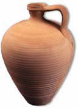
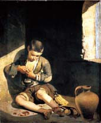
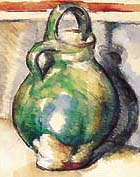
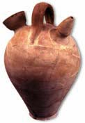
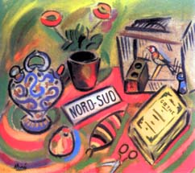
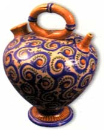

| Images
of Water Jugs
Museum of Water Jugs in Argentona, Spain
The
Museo del Càntir
(Museum of Water Jugs in Argentona, Spain), is unique as far as
museums go. Not only is this one of those rare museums dedicated
to ceramics, but this is one concerned especially with the Mediterranean
water jug – a water storage container that has been common
in the area for centuries. The main focus of the museum centers
on the traditional earthenware "càntir", but also
includes a generous variety of other implements related to water
and its age-old utility in the home, for example: pitchers, jugs
with and without handles, jet-spouted drinking vessels, ewers, flasks,
decanters, etc. In addition to its extensive collection of pottery
there are also a number of non-ceramic implements including glass,
metal, and cork and wooden "càntirs".
If
the Museum of Water Jugs is unique, perhaps the exhibition Imatges
del Càntir (Images of Water Jugs) is even more so one of
a kind.
This show is the result of several years of research and examines
paintings of various epochs depicting the common Mediterranean water
jug. The depiction of the water jug can be traced as far back as
the Greeks of the 3rd century BC. The exhibition picks up and follows
the development of the jug in painting from the Middle Ages, through
to Renaissance (Duccio, Martorelli, Giotto), Baroque and the 18th
and 19th centuries (Carraci, Velazquez, Goya) and finally modernity
(Matisse, Gris, Miro).

The exhibition has obviously been well researched. Water jugs from
various periods are juxtaposed alongside paintings depicting (sometimes
strikingly) similar vessels. In a sense, these pots jump out of
the painting, coming to life in 3D.

Whoever is passing anywhere nearby Argentona, near Barcelona, Spain,
should make an effort to see the museum and this exhibition, which
will continue well into 2004.
More Articles
|